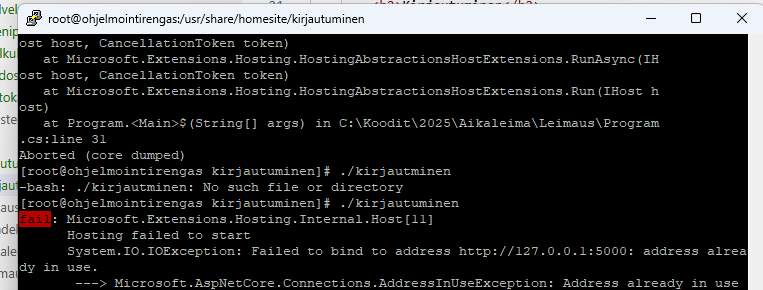
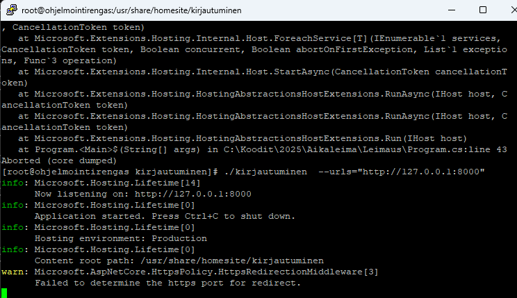
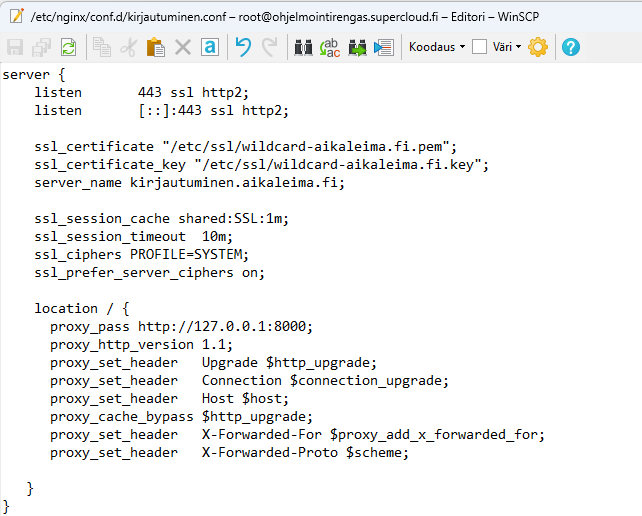
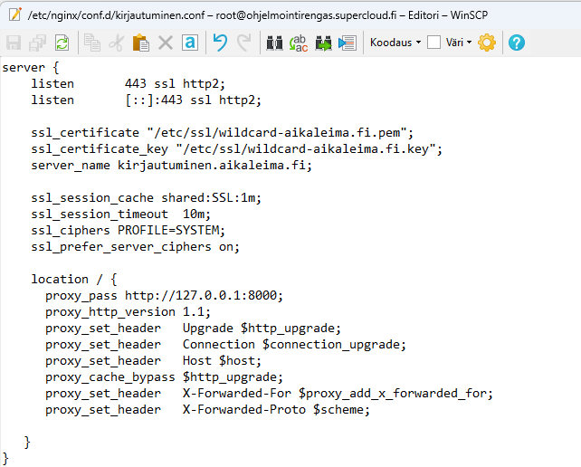
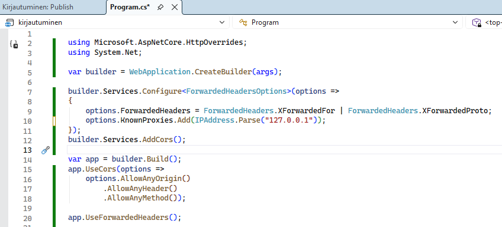
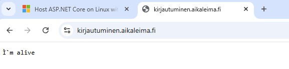
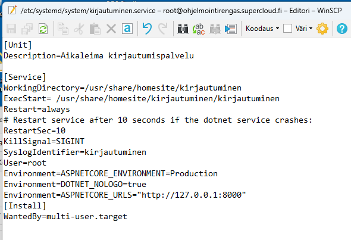
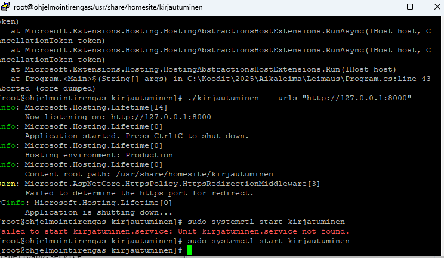

Kirjautuminen
Tämä projekti on API-palvelu, jota sovellukset voivat käyttää kirjautumispyyntöjen ja kirjautumisten hyväksymiseen.
Ei mitään monimutkaista: yksinkertainen palvelu, joka toteuttaa tiedonvälityksen sovelluksen A ja tunnistusvälineen B välillä.
Käydään vaihe vaiheelta läpi, miten sovellus rakennetaan. Mielestäni tämä käytäntö, jossa ketju rakennetaan työpöydältä tuotantoon asti, on parasta
tehdä mahdollisimman varhaisessa vaiheessa.
API-sovelluksen perusosat
Tavoite
Tehdään ensin perus-API-palvelu ja sille oletus-GET-funktio juureen: app.MapGet("/",() => "I`m alive").
Yritetään saada se toimimaan osoitteessa kirjautuminen.aikaleima.fi.
Toteutus
Tässä ei varsinaisesti ole mitään erikoista: uusi API-sovellus Visual Studiolla, testaus että se toimii ja sitten julkaisu (publish).
Tiedostot kopioidaan omaan leimaus-alikansioon /usr/share/homesite/leimaus. Asetetaan oikeudet kohdalleen: kahdelle tiedostolle, kirjautuminen ja kirjautuminen.dll, asetetaan 755-oikeudet.
Sitten törmätään ensimmäiseen ongelmaan.
Ongelmien ratkaisu


Se, mikä onnistuu testipalvelun kanssa, ei onnistu kirjautumispalvelimen kanssa, eli käynnistäminen nimellä, koska portti 5000 on varattu testipalvelulle (kuva 1).
Se ratkeaa komentoriviparametreilla: ./kirjautuminen --urls="http://127.0.0.1:8000" (kuva 2).
Luonnollisesti kannattaa tehdä käynnistysskripti, jotta jatkossa ei tarvitse muistella portteja: start.sh.
 
Nyt palvelu on saatu käyntiin palvelimella. Miten se sitten testataan? Tarvitaan toinen istunto palvelimelle.
Ajetaan komento curl http://127.0.0.1:8000 (kuva 1). Seuraavaksi laitetaan palvelulle kuntoon Nginx-konfiguraatiotiedosto kansioon
/etc/nginx/conf.d/kirjautuminen.conf (kuva 2). Sitten käynnistetään Nginx uudelleen.

Nyt palvelu on saatu käyntiin palvelimella. Miten se sitten testataan? Tarvitaan toinen istunto palvelimelle.
Ajetaan komento curl http://127.0.0.1:8000 (kuva 1). Seuraavaksi laitetaan palvelulle kuntoon Nginx-konfiguraatiotiedosto kansioon
/etc/nginx/conf.d/kirjautuminen.conf (kuva 2). Sitten käynnistetään Nginx uudelleen.


Tehdään pieni koodimuutos, koska sivusto on proxyn takana (kuva 1).
Lopputulos on sitten odotetun mukainen. Vielä ei ole valmista. Meidän täytyy laittaa palvelu pyörimään taustalla.
Nythän me käynnistimme sen testausta varten komentoriviltä terminaalissa.


Tarvitaan tiedosto kansioon /etc/systemd/system/kirjautuminen.service (kuva 1) ja sitten pari komentoa:
sudo systemctl daemon-reload ja käynnistys sudo systemctl start kirjautuminen (kuva 2).
Ohje asennukseen löytyy Microsoftin sivuilta tästä linkistä.